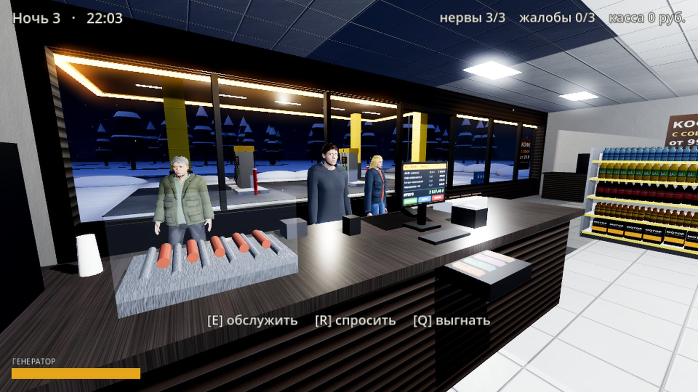
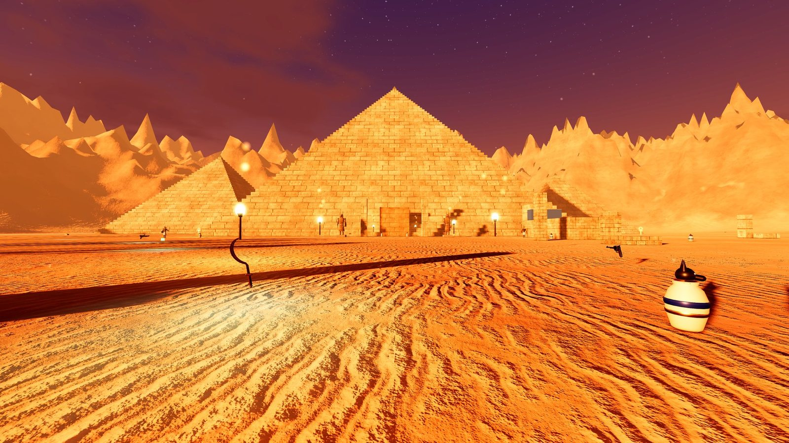

Северная
Сюжетный хоррор от первого лица, один игрок
Младший брат пропал у лесозаготовительной базы. Последнее, что он сказал по телефону: «Если я позвоню и скажу, что всё нормально, — не верь мне». Туман, заглохшая машина и старая заправка, где часы над кассой всегда показывают 02:17, а дверь запирают без десяти полночь.
- Что внутри
- полная история: пролог, пять глав, две концовки
- Версия
- 1.0
- Платформа
- Windows, около 60 МБ
- Озвучка
- субтитры и шёпот
Скачали — раз



Ночная смена
Кооперативный хоррор, до трёх игроков по сети
Заправка «Маяк» на зимней трассе. Обслуживай покупателей, пробивай чеки, следи за генератором — и присматривайся к тем, кто заходит. Не все из них люди. Одному страшно, втроём шумно: зови друзей по коду комнаты.
- Игроков
- 1–3, один создаёт смену, остальные подключаются
- Версия
- 0.2
- Платформа
- Windows, около 55 МБ
Скачали — раз
Как играть с другом
- Один игрок нажимает «Создать смену» и отправляет друзьям код комнаты.
- Остальные вводят код и нажимают «Подключиться к другу».
- Если через интернет не соединяет, поставьте всем Radmin VPN или играйте в одной сети Wi-Fi.



Зов Осириса
Шутер от первого лица в египетской гробнице
Пирамиды, пустыня и гробница под ними. Отбивайся от стражей и жрецов, уворачивайся рывком и собирай усиления между волнами. Есть сюжетный спуск и арена на выживание. Работает на компьютере и на телефоне — с сенсорными кнопками.
- Версия
- 1.3
- Windows
- около 65 МБ, архив ZIP
- Android
- около 58 МБ, файл APK
Скачали — раз
Если не запускается
Windows пишет «Система Windows защитила ваш компьютер»
- Так Windows встречает любые программы без платной подписи издателя.
- Нажми «Подробнее», затем «Выполнить в любом случае».
Как поставить APK на телефон
- Скачай файл и открой его из загрузок.
- Телефон спросит разрешение на установку из этого источника — разреши.
- Нажми «Установить».